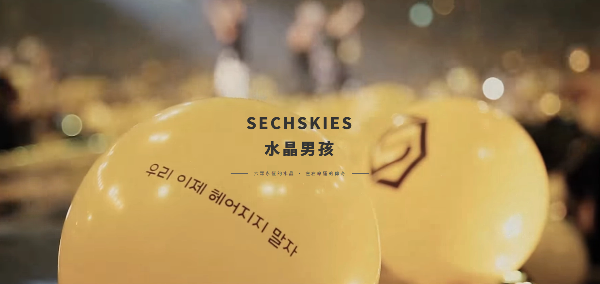
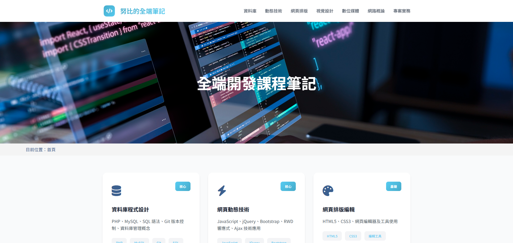
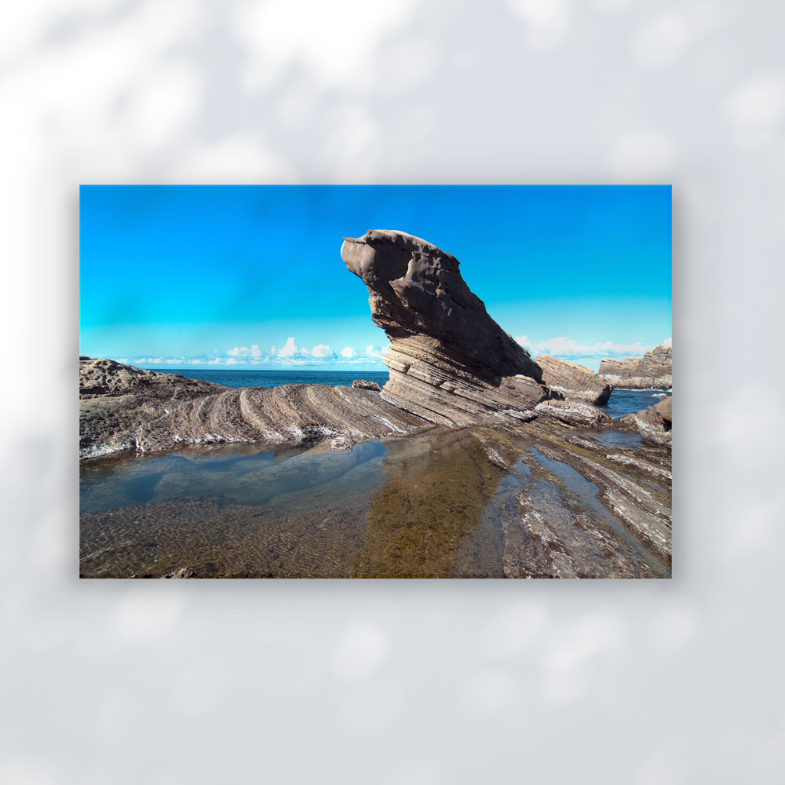
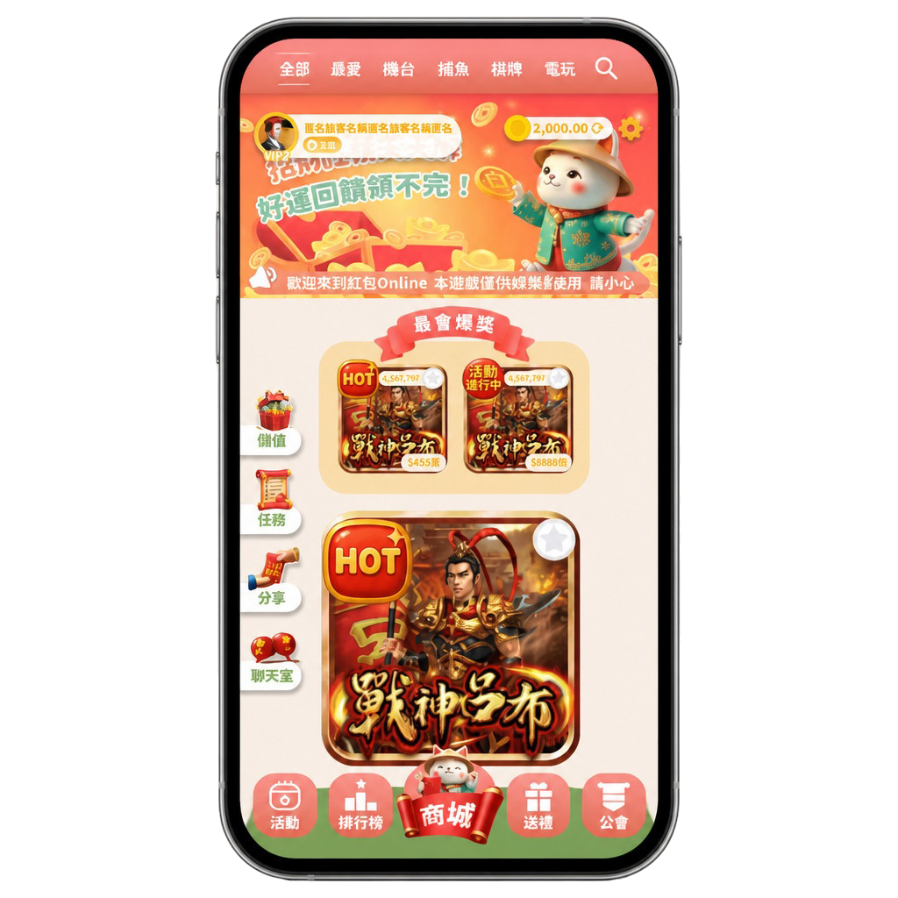

平面時期：水晶男孩 logo 改島、周邊衣服，迷妹會找我去島上掛衣服。
2026：同一條線做成 推廣部官網，SEO、圖片載入與表單互動一起處理。
熱愛學習，也愛聽「到底有什麼是妳不會的？」；學習很認真，不想學的時候也很認真（淡季／旺季）。
2026 延伸：旺季＝全端課、乙檢鍵盤、作品集衝刺，會建立 SOP 讓 AI 幫掃規格、對齊 commit 規範。淡季＝動森、追劇、徹底斷電。動森時期組過水晶森友會；現在則是組 筆記站 與這份 repo 的檔案結構。

從小就不當減肥、溜溜球效應、2019 開始健身——不愛運動但會換很多種運動試試，避免膩。
2026 延伸：體重之外，更像是能量配置的靈活：戰場模式可以連續熬夜刻作品集；離線模式可以 100% 躺平。和 使用手冊 MBTI 裡的 J／P 雙模切換是同一套——不必硬逼自己永遠像機器人。

以前記錄重訓／有氧；現在也記錄「這週產出了什麼」——
一個 Nav 區上線、一頁 HTML 通過 RWD、一筆 git push，都算有在動。

仍喜歡把想做的事排進行程；避開人潮的晨練習慣還在。2026 多了一項：兩地開發要顧好 git，不讓 sandbox 搞壞本機 index.lock。
因為懶，所以追求有效率：模組化 CSS、site-guide 對照表、能搜尋的技能表。省下時間留給真正要精修的作品或學後端。
可愛的人／事／物、貓、黃色、韓國文化——都還在。2026 多喜歡：乾淨的切版、會動的燈箱、Figma 裡對齊到像素的手感。
2023 的「有神要拜」變成 2026 的作品集實體化：Graphic／Illustration／UIUX／Web 已有成品，About／Photo 等 Nav 還在灰字擴充中。目標從「熱愛報名」改成熱愛上線——做出來、推上去、寫進 commit。

「果實」= 能力值總覽。Notion 原資料用五種領域（多媒體設計、語言、運動、手作、音樂），但多媒體一口氣塞了 8 項、其他各 1 項，平鋪會很不平均。這裡改排成四組、每組 3 張，方便一眼掃過。
視覺設計 3 項

Logo、包裝、Banner、印刷物。AI／PS／ID。
動物、食物、賀卡、角色。Procreate。

線框、原型、App 介面。Figma。
影像與媒體 3 項
語言與生活 3 項


完整技能條與關鍵字搜尋 → 努比使用手冊 · 技能